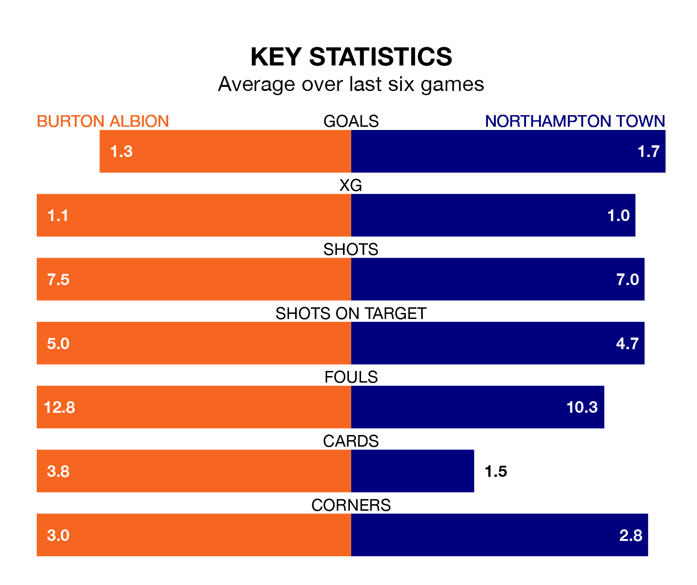

Burton Albion host Northampton Town on Saturday at the Pirelli Stadium in EFL League One.
In their last league match, on February 17, Burton beat Leyton Orient 2-1 away, with goals from Aristote Nsiala and Mason Bennett.
Northampton drew, 2-2 away at Oxford United on Tuesday, with Tony Springett and William Hondermarck on the scoresheet.
With 29 goals in 32 games so far this season, Burton are scoring at below the league average rate with 0.9 goals per game. And they are conceding at an average rate, letting in 41 goals at a rate of 1.3 per game.
Northampton, meanwhile, are above average scorers, with 1.4 goals per game, compared to a league average of 1.3. They have conceded 1.5 goals per game.
Albion are in mixed form in EFL League One, with three wins and a draw from their last six games.
With a win and two draws over that period, Town's form is worse – they have taken five points from 18, compared to the Brewers' 10.
The hosts are 18th in the table after 32 games, of which they have won 10 and drawn eight, earning 38 points.
The Cobblers are six places ahead of Burton in 12th, with 13 wins and six draws putting them on 45 points.
In Sam Hoskins, the away side have one of the league's sharpest shooters so far this season. He has notched 14 goals in 28 appearances, to sit sixth in the scoring charts.
His goal rate of one every 167 minutes is much quicker than that of Beryly Lubala, Burton's top scorer with a goal every 342 minutes, and a total of five goals in 24 games.
In the last five years, Burton and Northampton have played each other on four occasions. Burton won one of them and Northampton the other.
On average, the Brewers scored 1.2 goals and the Cobblers 2.2 in those matches.
Their last meeting was on November 11, when Northampton won 2-0 at home.
Updated: 10:08 (UTC), 23/02/24